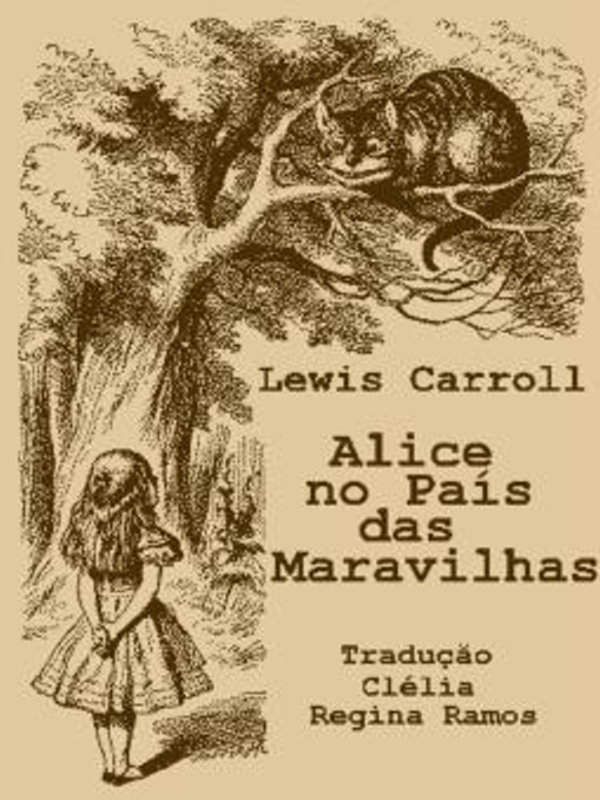
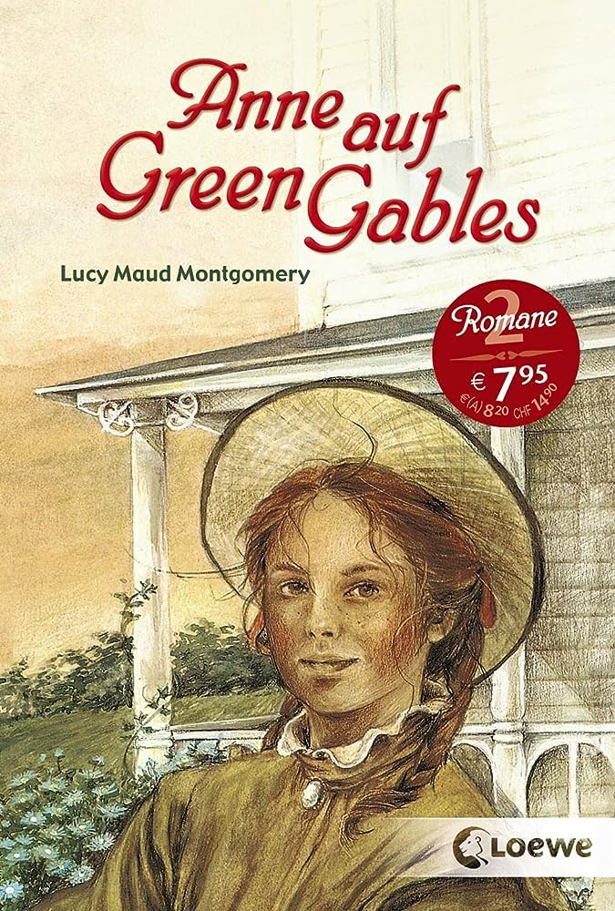
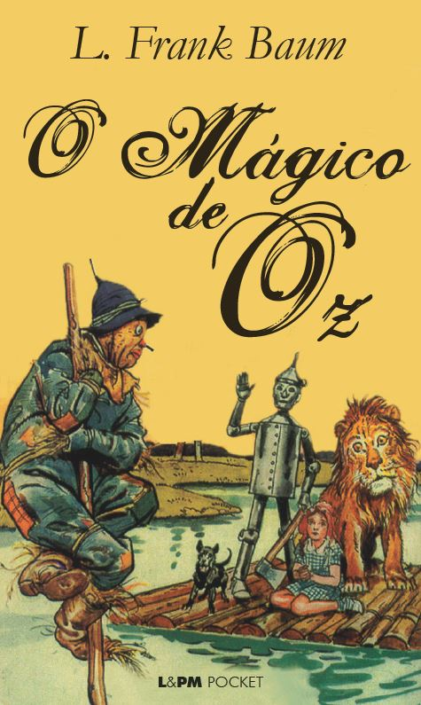

Terça-feira
13 de agosto de 2023.
Alice No País das Maravilhas
"Alice no País das Maravilhas", obra clássica de Lewis Carroll, mergulha os leitores em um universo de
maravilhas e absurdos, onde a realidade é distorcida e a imaginação corre solta.
"Alice no País das Maravilhas", escrito por Lewis Carroll, é um conto de fantasia que narra as aventuras
surreais da jovem Alice após cair em um buraco de coelho. Ela entra em um mundo de maravilhas e absurdos,
onde
encontra personagens excêntricos como o Chapeleiro Maluco, a Lagarta, o Gato de Cheshire e a Rainha de
Copas.
Enfrentando desafios ilógicos e mudanças de tamanho imprevisíveis, a narrativa explora a natureza da
identidade, crescimento e lógica, ao mesmo tempo em que critica as normas sociais da época. O livro continua
a
encantar leitores de todas as idades com sua imaginação desenfreada e crítica sutil.
Leia Mais

Terça-feira
13 de agosto de 2023.
Anne of Green Gables
"Anne of Green Gables", escrito por Lucy Maud Montgomery, nos transporta para um mundo pitoresco de Avonlea,
onde a vida da órfã Anne Shirley toma vida.
"Anne of Green Gables" é uma narrativa de Lucy Maud Montgomery que nos introduz à órfã Anne Shirley. Enviada
por engano para viver com os irmãos Cuthbert em Green Gables, Anne traz uma alegria contagiante à serena
Avonlea. Com sua imaginação vívida e personalidade cativante, Anne conquista os corações das pessoas ao seu
redor, enquanto enfrenta desafios, faz amizades e floresce em um mundo que inicialmente a desconcerta.
Através
dessa encantadora história, Montgomery explora temas de autodescoberta, amizade e o poder transformador do
amor e da aceitação.
Leia Mais

Terça-feira
13 de agosto de 2023.
O Mágico de Oz
"O Mágico de Oz", escrito por L. Frank Baum, é um conto mágico que nos leva a uma jornada encantadora.
"O Mágico de Oz", escrito por L. Frank Baum, segue a jornada de Dorothy Gale, uma jovem transportada por um
ciclone para a mágica Terra de Oz. Companheira de um Espantalho, Homem de Lata e Leão Covarde, eles embarcam
em
uma busca pela Cidade das Esmeraldas para encontrar o Mágico de Oz, cada um buscando algo que acredita lhes
faltar - um cérebro, um coração, coragem e um caminho de volta para casa. A narrativa cativante explora
temas de
amizade, autodescoberta e superação de obstáculos, enquanto os personagens enfrentam desafios encantadores
em
uma terra de maravilhas e perigos.
Leia Mais